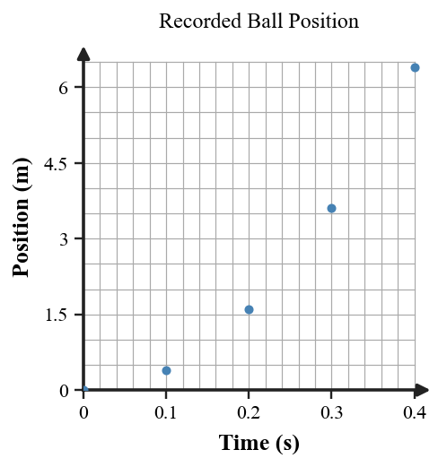

Unit 1.1 · Activity 1 · Thinking Like a PhysicistProblem 1
Problem 1
DOK 1
1. A student writes, “The liquid level rose 3.0 cm.” Classify the statement as an observation, inference, hypothesis, law, or theory.
Unit 1.1 · Activity 1 · Thinking Like a PhysicistSolution 1
Solution 1
DOK 1
1. A student writes, “The liquid level rose 3.0 cm.” Classify the statement as an observation, inference, hypothesis, law, or theory.
Work / rationale: Observation. It directly reports a measured change in the liquid level.
Unit 1.1 · Activity 1 · Thinking Like a PhysicistProblem 2
Problem 2
DOK 1
2. What term describes a proposed explanation or prediction that can be tested and could be shown to be wrong?
Unit 1.1 · Activity 1 · Thinking Like a PhysicistSolution 2
Solution 2
DOK 1
2. What term describes a proposed explanation or prediction that can be tested and could be shown to be wrong?
Work / rationale: Hypothesis. A hypothesis is a testable proposed explanation or prediction that could be shown to be wrong by evidence.
Unit 1.1 · Activity 1 · Thinking Like a PhysicistProblem 3
Problem 3
DOK 1
3. What term describes observations or measurements used to support, challenge, or revise a claim?
Unit 1.1 · Activity 1 · Thinking Like a PhysicistSolution 3
Solution 3
DOK 1
3. What term describes observations or measurements used to support, challenge, or revise a claim?
Work / rationale: Evidence. Evidence consists of observations or measurements used to support, challenge, or revise a claim.
Unit 1.1 · Activity 1 · Thinking Like a PhysicistProblem 4
Problem 4
DOK 1
4. In one sentence, distinguish a scientific law from a scientific theory.
Unit 1.1 · Activity 1 · Thinking Like a PhysicistSolution 4
Solution 4
DOK 1
4. In one sentence, distinguish a scientific law from a scientific theory.
Work / rationale: A scientific law describes a consistent pattern or relationship in nature, while a scientific theory is a well-supported explanation for how or why phenomena occur.
Unit 1.1 · Activity 1 · Thinking Like a PhysicistProblem 5
Problem 5
DOK 1
5. Name the term for a simplified representation or relationship used to describe, explain, or predict a physical situation.
Unit 1.1 · Activity 1 · Thinking Like a PhysicistSolution 5
Solution 5
DOK 1
5. Name the term for a simplified representation or relationship used to describe, explain, or predict a physical situation.
Work / rationale: Model. A model is a simplified representation or relationship used to describe, explain, or predict a physical situation.
Unit 1.1 · Activity 1 · Thinking Like a PhysicistProblem 6
Problem 6
DOK 2
6. Use the position-versus-time figure for a ball recorded at equal time intervals. State one direct observation about the plotted data and one inference about how the ball’s motion is changing.

Unit 1.1 · Activity 1 · Thinking Like a PhysicistSolution 6
Solution 6
DOK 2
6. Use the position-versus-time figure for a ball recorded at equal time intervals. State one direct observation about the plotted data and one inference about how the ball’s motion is changing.
Work / rationale: One direct observation is that the plotted position increases at every equal 0.1 s interval: approximately 0 m, 0.4 m, 1.6 m, 3.6 m, and 6.4 m. One inference is that the ball is speeding up, because the position changes by larger amounts during successive equal time intervals.
Unit 1.1 · Activity 1 · Thinking Like a PhysicistProblem 7
Problem 7
DOK 2
7. A diagram of sunlight and shadows uses parallel rays even though the Sun is very far away rather than literally infinitely far away. Explain why this simplification can be reasonable for the model.
Unit 1.1 · Activity 1 · Thinking Like a PhysicistSolution 7
Solution 7
DOK 2
7. A diagram of sunlight and shadows uses parallel rays even though the Sun is very far away rather than literally infinitely far away. Explain why this simplification can be reasonable for the model.
Work / rationale: Across the relatively small region used in the shadow diagram, rays arriving from the very distant Sun have nearly the same direction. Treating them as parallel removes unnecessary detail while preserving the geometry needed to model the shadows.
Unit 1.1 · Activity 1 · Thinking Like a PhysicistProblem 8
Problem 8
DOK 2
8. A student proposes: “The period of a pendulum changes when its length changes.” Describe one measurement that could test the claim and one possible result that would count against it.
Unit 1.1 · Activity 1 · Thinking Like a PhysicistSolution 8
Solution 8
DOK 2
8. A student proposes: “The period of a pendulum changes when its length changes.” Describe one measurement that could test the claim and one possible result that would count against it.
Work / rationale: Measure the pendulum period for several different lengths while keeping other relevant conditions as consistent as possible. A result that would count against the claim is that substantially different lengths give the same period within the measurement uncertainty.
Unit 1.1 · Activity 1 · Thinking Like a PhysicistProblem 9
Problem 9
DOK 2
9. Measurements agree with a model in four trials but not in two later trials. Explain why the disagreement should be investigated rather than discarded.
Unit 1.1 · Activity 1 · Thinking Like a PhysicistSolution 9
Solution 9
DOK 2
9. Measurements agree with a model in four trials but not in two later trials. Explain why the disagreement should be investigated rather than discarded.
Work / rationale: The disagreement may reveal a measurement problem, a changed condition, an incorrect assumption, or a limitation of the model. The later trials should be checked and repeated rather than discarded simply because they do not match the expected result.
Unit 1.1 · Activity 1 · Thinking Like a PhysicistProblem 10
Problem 10
DOK 2
10. A formula gives a predicted diameter from an apparent-size measurement. Explain why knowing the meaning and source of each quantity matters before trusting the result.
Unit 1.1 · Activity 1 · Thinking Like a PhysicistSolution 10
Solution 10
DOK 2
10. A formula gives a predicted diameter from an apparent-size measurement. Explain why knowing the meaning and source of each quantity matters before trusting the result.
Work / rationale: The quantities must have the intended physical meanings, appropriate units, trustworthy measurement sources, and conditions that match the formula's assumptions. Otherwise the calculation can be numerically correct but physically meaningless or misleading.
Unit 1.1 · Activity 1 · Thinking Like a PhysicistProblem 11
Problem 11
DOK 3
11. A group rejects a new measurement because it conflicts with the explanation they already prefer. Evaluate their reasoning and describe a more scientific response to the conflicting evidence.
Unit 1.1 · Activity 1 · Thinking Like a PhysicistSolution 11
Solution 11
DOK 3
11. A group rejects a new measurement because it conflicts with the explanation they already prefer. Evaluate their reasoning and describe a more scientific response to the conflicting evidence.
Work / rationale: Their reasoning is weak because they are dismissing evidence based on preference for an existing explanation. A more scientific response is to check the measurement procedure, repeat the measurement, compare predictions from competing explanations, and revise the preferred explanation if reliable conflicting evidence persists.
Unit 1.1 · Activity 1 · Thinking Like a PhysicistProblem 12
Problem 12
DOK 3
12. Model A includes many realistic visual details but does not preserve the measured geometric relationship. Model B is visually simple but preserves the relationship and correctly predicts a new measurement. Which model is more useful for this question? Defend your choice.
Unit 1.1 · Activity 1 · Thinking Like a PhysicistSolution 12
Solution 12
DOK 3
12. Model A includes many realistic visual details but does not preserve the measured geometric relationship. Model B is visually simple but preserves the relationship and correctly predicts a new measurement. Which model is more useful for this question? Defend your choice.
Work / rationale: Model B is more useful for this question because it preserves the measured relationship that matters and successfully predicts a new measurement. Extra visual realism in Model A does not compensate for failing to represent the relevant relationship.
Unit 1.1 · Activity 1 · Thinking Like a PhysicistProblem 13
Problem 13
DOK 1
13. Which statement is a hypothesis?
The thermometer reads 35°C.
The sample is warmer because it absorbed energy from the lamp.
If lamp distance changes, the sample’s measured temperature rise will change.
The data table contains five trials.
The ruler is graduated in centimeters.
Unit 1.1 · Activity 1 · Thinking Like a PhysicistSolution 13
Solution 13
DOK 1
13. Which statement is a hypothesis?
The thermometer reads 35°C.
The sample is warmer because it absorbed energy from the lamp.
If lamp distance changes, the sample’s measured temperature rise will change.
The data table contains five trials.
The ruler is graduated in centimeters.
Answer:C. If lamp distance changes, the sample’s measured temperature rise will change.
Rationale: A hypothesis makes a specific, testable prediction about how one variable may affect another; this statement can be checked by changing lamp distance and measuring temperature rise.
Unit 1.1 · Activity 1 · Thinking Like a PhysicistProblem 14
Problem 14
DOK 1
14. Which statement best describes a scientific theory?
A guess made before any evidence exists.
A broad explanation supported by a large body of well-tested information.
A relationship that cannot be revised.
A single measurement written as a sentence.
A formula that always gives an exact answer.
Unit 1.1 · Activity 1 · Thinking Like a PhysicistSolution 14
Solution 14
DOK 1
14. Which statement best describes a scientific theory?
A guess made before any evidence exists.
A broad explanation supported by a large body of well-tested information.
A relationship that cannot be revised.
A single measurement written as a sentence.
A formula that always gives an exact answer.
Answer:B. A broad explanation supported by a large body of well-tested information.
Rationale: A scientific theory explains a broad range of observations and is supported by extensive testing and evidence; it is not merely an unsupported guess or an unchangeable rule.
Unit 1.1 · Activity 1 · Thinking Like a PhysicistProblem 15
Problem 15
DOK 2
15. Which claim is least scientifically testable as written?
A longer string changes a pendulum’s period.
The brightness measured by a sensor decreases as the source moves farther away.
An undetectable cause changes the motion but can never affect any measurement.
A metal rod changes length when its temperature changes.
A cart travels farther when released from a higher ramp position.
Unit 1.1 · Activity 1 · Thinking Like a PhysicistSolution 15
Solution 15
DOK 2
15. Which claim is least scientifically testable as written?
A longer string changes a pendulum’s period.
The brightness measured by a sensor decreases as the source moves farther away.
An undetectable cause changes the motion but can never affect any measurement.
A metal rod changes length when its temperature changes.
A cart travels farther when released from a higher ramp position.
Answer:C. An undetectable cause changes the motion but can never affect any measurement.
Rationale: A scientific claim must connect to observations or measurements that could count for or against it. A cause that can never affect any measurement cannot be tested as written.
Unit 1.1 · Activity 1 · Thinking Like a PhysicistProblem 16
Problem 16
DOK 2
16. What makes a failed prediction scientifically useful?
It can show that a claim, model, measurement, or assumption needs to be checked or revised.
It proves experiments should be avoided.
It automatically establishes a new scientific law.
It means all earlier measurements were dishonest.
It shows the claim was never scientific.
Unit 1.1 · Activity 1 · Thinking Like a PhysicistSolution 16
Solution 16
DOK 2
16. What makes a failed prediction scientifically useful?
It can show that a claim, model, measurement, or assumption needs to be checked or revised.
It proves experiments should be avoided.
It automatically establishes a new scientific law.
It means all earlier measurements were dishonest.
It shows the claim was never scientific.
Answer:A. It can show that a claim, model, measurement, or assumption needs to be checked or revised.
Rationale: A failed prediction is evidence that something in the claim, model, assumptions, or measurement process may need to be checked. That makes the failure useful rather than something to ignore.
Unit 1.1 · Activity 1 · Thinking Like a PhysicistProblem 17
Problem 17
DOK 2
17. A model predicts a 2:1 relationship, and repeated measurements are close to 2:1. Which statement is best supported?
The evidence is consistent with the model, but additional evidence could still challenge it.
The model is now impossible to revise.
The model must reproduce every visual detail of the real system.
The measurements are no longer needed.
The relationship is true because it was predicted first.
Unit 1.1 · Activity 1 · Thinking Like a PhysicistSolution 17
Solution 17
DOK 2
17. A model predicts a 2:1 relationship, and repeated measurements are close to 2:1. Which statement is best supported?
The evidence is consistent with the model, but additional evidence could still challenge it.
The model is now impossible to revise.
The model must reproduce every visual detail of the real system.
The measurements are no longer needed.
The relationship is true because it was predicted first.
Answer:A. The evidence is consistent with the model, but additional evidence could still challenge it.
Rationale: Repeated measurements near the predicted 2:1 relationship support the model, but scientific models remain open to revision if new reliable evidence disagrees.
Unit 1.1 · Activity 1 · Thinking Like a PhysicistProblem 18
Problem 18
DOK 2
18. Which action best uses evidence to evaluate an explanation?
Choose the explanation written by the most famous person.
Compare what each explanation predicts with repeated observations or measurements.
Select the explanation with the longest equation.
Accept the first explanation that sounds familiar.
Ignore results that do not match the expected pattern.
Unit 1.1 · Activity 1 · Thinking Like a PhysicistSolution 18
Solution 18
DOK 2
18. Which action best uses evidence to evaluate an explanation?
Choose the explanation written by the most famous person.
Compare what each explanation predicts with repeated observations or measurements.
Select the explanation with the longest equation.
Accept the first explanation that sounds familiar.
Ignore results that do not match the expected pattern.
Answer:B. Compare what each explanation predicts with repeated observations or measurements.
Rationale: Evidence evaluates an explanation by comparing what the explanation predicts with what is repeatedly observed or measured, not by authority, familiarity, or equation length.
Unit 1.1 · Activity 1 · Thinking Like a PhysicistProblem 19
Problem 19
DOK 2
19. What should a student identify before using a formula to make a physical claim?
Only the calculator buttons needed.
The meaning of the quantities, where their values came from, and the assumptions behind the relationship.
The number of symbols in the equation.
Whether the final decimal has many digits.
Whether a classmate got the same arithmetic answer.
Unit 1.1 · Activity 1 · Thinking Like a PhysicistSolution 19
Solution 19
DOK 2
19. What should a student identify before using a formula to make a physical claim?
Only the calculator buttons needed.
The meaning of the quantities, where their values came from, and the assumptions behind the relationship.
The number of symbols in the equation.
Whether the final decimal has many digits.
Whether a classmate got the same arithmetic answer.
Answer:B. The meaning of the quantities, where their values came from, and the assumptions behind the relationship.
Rationale: A calculation is physically meaningful only when the variables represent the intended quantities, their values come from appropriate measurements, and the model assumptions apply.
Unit 1.1 · Activity 1 · Thinking Like a PhysicistProblem 20
Problem 20
DOK 2
20. A formula produces 12.4387 m from measurements recorded only to the nearest meter. What is the main concern?
The equation contains too few symbols.
The reported precision may suggest more certainty than the measurements support.
All formulas should produce whole numbers.
The model is automatically wrong.
Scientific laws cannot use measured values.
Unit 1.1 · Activity 1 · Thinking Like a PhysicistSolution 20
Solution 20
DOK 2
20. A formula produces 12.4387 m from measurements recorded only to the nearest meter. What is the main concern?
The equation contains too few symbols.
The reported precision may suggest more certainty than the measurements support.
All formulas should produce whole numbers.
The model is automatically wrong.
Scientific laws cannot use measured values.
Answer:B. The reported precision may suggest more certainty than the measurements support.
Rationale: The input measurements are only known to the nearest meter, so reporting four decimal places creates false precision that the measurements cannot support.